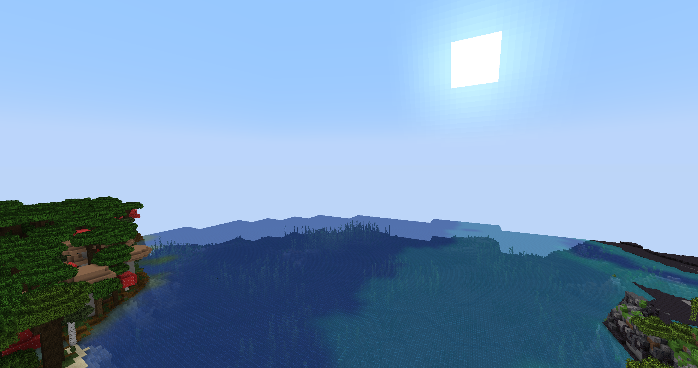

Title
Frame Time: 0ms (~1 Morbillion FPS)
Distant Horizons Quality Preset: Unknown
Shader Performance Preset: Unknown
You paid for your computer, so you might as well use all of it.
Jokes aside, my ethos is that everyone gets to have a similar-ish experience, so we don't end up in situations like this.
To help achieve this, I've done some basic performance testing to help you (yes you dear reader) reach a decent experience with minimal trade-off.
Now obviously I can't plan for every permutation of CPU, GPU, monitors, and other things that influence how well your game runs. What I can do however is test different things on my own computer with the belief that they'll have a similar impact on your own.
To help improve the accuracy and usefulness of these readings, I am not using FPS as a metric for performance, instead I am using frame times.
Frame times are the opposite of FPS, you can think of it as SPF (no, not the sunscreen SPF). For instance, in order to reach 60FPS you need a frame time of at most 16ms.
The first thing you should do is calculate your ideal frame time, i.e. what FPS do you want your game to run at?
| FPS | Frame Time (ms) |
|---|---|
| 30 | 33 |
| 60 | 16 |
| 75 | 13 |
| 120 | 8 |
| 144 | 6 |
| 150 | 6 |
Or calculate your own, frame time = 1000 / your desired framerate.
Think of this frame time as your performance budget, better shaders will use up more frame time, and you need to keep it under the desired number to maintain the desired FPS.
Below is a series of images you can flick through to look at the different "levels" of shaders (and Distant Horizons), next to each one is a description of the main differences and the "cost" of the preset on your frame time.
Keep in mind: These frame time numbers are how my computer was impacted, if you have a better graphics card than me the impact might be smaller, and vice-versa if you have a worse graphics card.
You can also use the arrow keys to swap images below.

Frame Time: 0ms (~1 Morbillion FPS)
Distant Horizons Quality Preset: Unknown
Shader Performance Preset: Unknown
My general recommendation is to have Distant Horizons on "Medium", and shaders on whatever your default preset is (it'll say "(Default)" after it when you click through them).
When it comes to squeezing out more performance, you first should decide whether you want to sacrifice visuals (i.e. downgrade/remove shaders) or render distance (i.e. downgrade/remove Distant Horizons).
If downgrading Distant Horizons, you don't have a lot of options unfortunately. The Low quality preset might give you a marginal FPS increase, but the Minimum quality one looks worse than simply disabling Distant Horizons in my opinion.
You can also disable Distant Horizons without having to restart your game, just change Enable Rendering to False.
If downgrading shaders, the best improvements are tied to the performance presets, so diving into nested options menus isn't really worth it.
Ok nerd, first of all don't test CPU in a singleplayer world, since you're gonna be playing on multiplayer where your CPU won't have as much to do (since the server will be doing a lot of the heavy lifting for you).
Second of all the only thing you can do to help your CPU is reducing simulation distance and lowering the Distant Horizons CPU preset (if enabled).
Don't be afraid to ask for help on the Discord, I'd be more than happy to help tailor your settings to you specifically :)